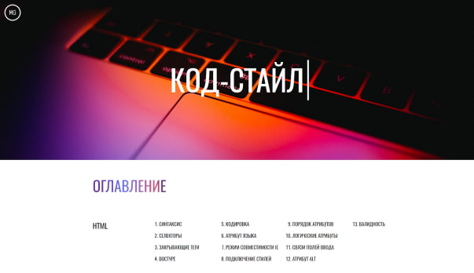

Представьте, что к вам подошел иностранец и задал вопрос. Скажем, про тонкий зелёный длинный маленький предмет. Первая мысль, которая приходит в голову: все слова знакомы, но с описанием предмета что-то не так. Интуитивно хочется расставить эти прилагательные по-другому (например, маленький зелёный тонкий длинный). Это называется порядком однородных определений.
Как и прилагательные в речи, CSS-свойства в коде также могут выглядеть не на своём месте, если их не выстроить в нужном порядке. Порядок свойств позволит программистам, работающим над одним проектом, понимать чужой код и правильно оформлять свой. Осталось договориться о том, как располагать свойства, чтобы не казаться друг другу иностранцами. Для такой цели и был придуман кодстайл (набор правил и соглашений, используемых при написании исходного кода на некотором языке программирования).
Для такой цели и был придуман кодстайл (набор правил и соглашений, используемых при написании исходного кода на некотором языке программирования).
«Исходный код - это ответственность, а не актив!» - Эрик Ли
У многих крупных компаний, таких как Яндекс ,Google, рекомендации по оформлению кода опубликованы и доступны всем желающим. В фирмах поменьше могут быть внутренние инструкции, иногда единый стиль кода оговаривается устно (бывает и такое).
Наш курс по веб-вёрстке - не исключение, в нём также есть правила оформления. Он делится на три части, о которых ниже.
Первая из частей - HTML. Это начальная стадия соблюдения кодстайла, ведь любой
сайт вы начинаете писать именно с этого языка. Давайте посмотрим на основные
правила:
● Теги и их атрибуты пишутся строчными буквами.
● Для значений атрибутов всегда используются двойные кавычки.
● Для отступов у вложенных элементов используется табуляция (рекомендуется
выставлять размер табуляции - 2).
● Используйте в качестве основного селектора class
● Закрывающий слеш у одиночных тегов (< img>, < br> и другие) не ставится.
Это лишь выжимка основного из всех правил, обязательно ознакомьтесь со всеми правилами и применяйте их.
В CSS правил больше, потому что синтаксис там посложнее. Одно из важных, которое действительно поможет вам сохранить ваш код в идеальном виде - порядок свойств. Давайте посмотрим, как это выглядит
| Порядок | Группа свойств | Используемые свойства |
|---|---|---|
| 1 | Позиционирование | position: relative;
left: 0; right: 0; top: 0; bottom: 0; |
| 2 | Блочная модель | display: flex;
align-items: center; margin: 10px; padding: 10px 20px; border: 1px solid red; width: 200px; height: 100px; box-sizing: border-box; |
| 3 | Типографика | font-family: Arial;
font-size: 25px; font-style: italic; text-decoration: none; color: red; |
| 4 | Оформление | background: red;
opacity: 1; |
| 5 | Анимации | transform: translateX(5px);
animation: shake 0.3s infinite; |
Правила JS не сильно отличаются от HTML и CSS, разве что само применение зависит от итогового синтаксиса. Например, есть такие правила, присущие только для JS, как:
Ну а полный кодстайл вы можете (и очень рекомендуется) изучить по ссылке.